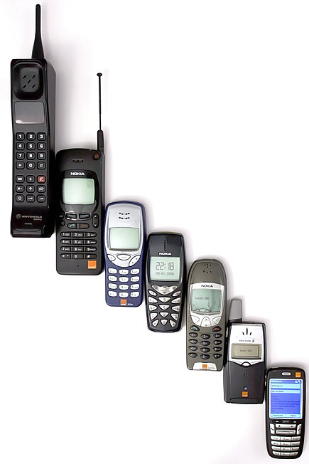

Phone Evaluation

A Phone that combines cellular and mobile computing functions into one unit. They are distinguished from feature phones by their stronger hardware capabilities and extensive mobile operating systems, which facilitate wider software, internet including web browsing over mobile broadband,and multimedia functionality including music, video, cameras, and gaming , alongside core phone functions such as voice calls and text messaging. Phone typically contain a number of metal–oxide–semiconductor (MOS) integrated circuit (IC) chips, include various sensors that can be leveraged by their software such as a magnetometer, proximity sensors, barometer, gyroscope, or accelerometer , and support wireless communications protocols such as Bluetooth, Wi-Fi, or satellite navigation.
IBM engineer realised that chip-and-wireless technology was becoming small enough to use in handheld devices. The first commercially available device that could be properly referred to as a "smartphone" began as a prototype called "Angler" developed in 1992 while at IBM and demonstrated in November of that year at the COMDEX computer industry trade market A refined version was marketed to consumers in 1994 by BellSouth under the name Personal Communicator. In addition to placing and receiving cellular calls, the touchscreen-equipped could send and receive faxes and emails which comes with internet in the software.
IBM engineer realised that chip-and-wireless technology was becoming small enough to use in handheld devices. The first commercially available device that could be properly referred to as a "smartphone" began as a prototype called "Angler" developed in 1992 while at IBM and demonstrated in November of that year at the COMDEX computer industry trade market A refined version was marketed to consumers in 1994 by BellSouth under the name Personal Communicator. In addition to placing and receiving cellular calls, the touchscreen-equipped could send and receive faxes and emails which comes with internet in the software.